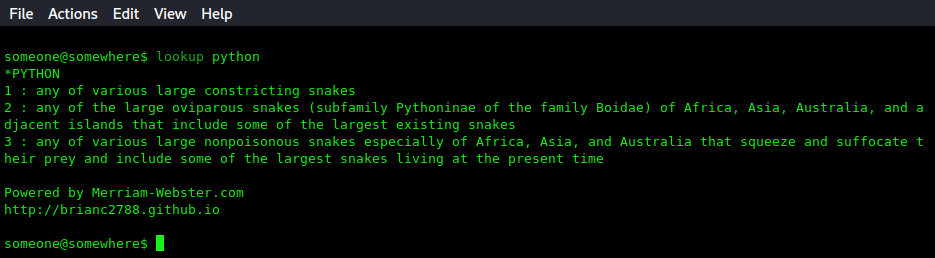
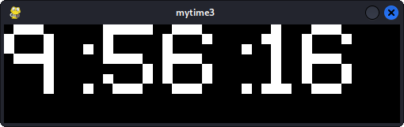
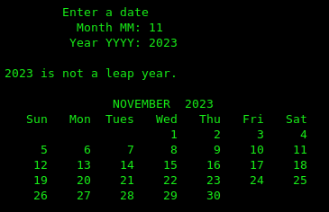
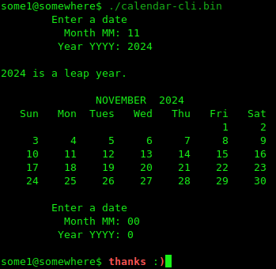

In lieu of an actual banner & navigation, here's a link home: Return Home
Python 3 - lookup

I get a ton of use out of this. When I first started learning about web scraping using
BeautifulSoup4 (Python3), I immediately thought of scraping Google for the definitions
of words. I had grown really accustomed to going to google and typing 'define' plus a
word I wanted to look up. Long story short, I ended up scraping Merriam-Webster's
website (This was also still a bit before I started getting into web API's). For me,
this is how I started eating my own dogfood, for those who are familiar with
the phrase. Clocking in at about 60 lines of python (around 0.06 KLOCS - Lol. I forgot
who came up with that; AT&T? MS?), it's nothing special and there's plenty of room for
improvement. Speaking of improvements, a graphical interface would be the most obvious
thing to implement -- could be just the excuse I need to crack open a No Starch book I
have for Python GUIs; that, or just use pygame. Anyways, because of how much it improves
productivity for me, I think it would be more than worth it to implement best practices,
docstrings, more robust exception handling and options, ...
mytime3

A digital clock GUI leveraging the time module & pygame. Pygame's not just for
games. I'm glad I mentioned that I used pygame; not like the module prints any
gratuitous self-inserts or anything... Yeah, hello to you too, pygame community.
It's actually a minor grievance; pygame is a nice module, but I also have to
acknowledge that it's more of a wrapper for SDL2, which is implemented natively in
the C language. The thing that hurts me a bit here, is that I've actually produced
a couple interactive demos using it. That being said, this is why I don't really
want to hate on pygame so much -- it's really just meant for demos or Proof-Of-Concept
projects. The Python language itself is a poor choice for serious game development.
I love Python, but I love it for its productivity, speed, and portability. It's not
totally infeasible to use Python and/or pygame for a game or similarly large, intensive
applications and it does happen, but I personally disagree with this practice. It would
very much behoove any developer to use pygame as a PoC platform and move on to C for
its native SDL2 support as well as its intrinsic benefits.
calendar-cli


This C++ program was originally created to satisfy the final project
that was assigned to my CS121 class, at the end of my first two semesters at my
local community college. The class was given two formulas; the first would calculate
whether or not a given date was a leap-year. The second formula calculated the day
of the week of the first day occurred on; also for a given month and year. We were
being graded on our ability to visually represent these calendars in the console,
which relied on things like loops and formatting.
Heheh - Embarrassingly enough, there are still a couple bugs in it that can ruin
the experience. It actually does exactly as advertised for most dates you can give
to it. However, as an example, the entire year of 2022 mis-aligns the first week
of any given month; printing it too far to the right of the screen and alienating
itself.